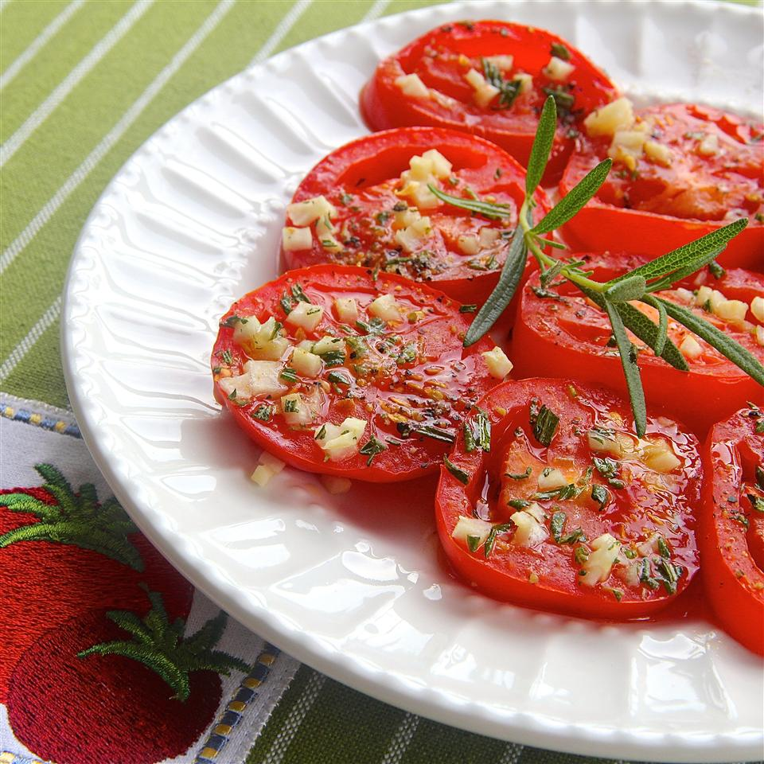

<!DOCTYPE html>

<html lang="eng">
	<head>
		<meta charset="UTF-8">
		<title>Baked-Tomato-Slices</title>
		<link rel="stylesheet" href="../css/recipes.css">
	</head>
</html>

<body>
	<h1 id="top">Baked Tomato Slices</h1>
	
	<ul class="hidden bac">
		<button class="btn">Ingredients</button>
		<li>olive oil, divided, or as needed</li>
		<li>1 large tomato, cut into 1/2-inch-thick slices</li>
		<li>1 sprig fresh rosemary, leaves stripped and finely chopped</li>
		<li>1 clove garlic, minced</li>
		<li>1 cup chicken broth</li>
		<li>salt and ground black pepper to taste</li>
	</ul>
	<ol class="hidden bac" >
		<button class="btn">Steps</button>
		<li><b>Step one</b><br>Preheat oven to 350 degrees F (175 degrees C). Brush baking sheet with about 1<br>  tablespoon olive oil.</li>
		<li><b>Step two</b><br>Arrange tomato slices on the baking sheet. Sprinkle rosemary and garlic over <br> tomatoes and brush with remaining olive oil; season with salt and pepper</li>
		<li><b>Step three</b><br>Bake in the preheated oven until tomatoes are tender, 5 to 10 minutes.</li>
	</ol>
	<a href="../index.html">HOME</a>
	<br>
	<a href="#top">TO THE TOP</a>
</body>